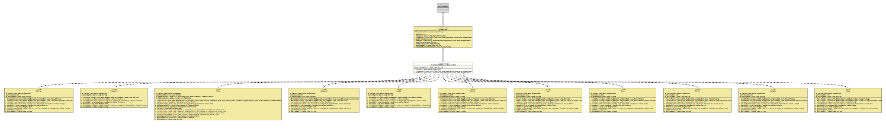

Interface DimensionWithLinearConversion
- All Superinterfaces:
Dimension,Serializable
- All Known Implementing Classes:
Area,DataSize,Energy,Force,Length,Mass,Power,Pressure,Speed,Time,Volume
The implementations of this interface are used to give
(numerical) values a dimension and a measuring unit. So 3.1415 is
just a number, but it could also stand for a length
(3.1415 m), a time (3.1415 s) or even the fuel
consumption of a car (3.1415 l/100 km). Depending on the
dimension, different values could be equal:
1.0 m == 100.0 cmand should be treated as such.
This interface should be implemented as
enums,
where the enum values are the units, and as such they should provide a
method to retrieve an enum value (a unit) by the respective
symbol.
It is a generalisation for dimensions that are converted by simple division or multiplication of a factor, as for length or speed.
- Author:
- Thomas Thrien (thomas.thrien@tquadrat.org)
- Version:
- $Id: DimensionWithLinearConversion.java 1072 2023-09-30 20:44:38Z tquadrat $
- Since:
- 0.1.0
- UML Diagram
-

UML Diagram for "org.tquadrat.foundation.value.api.DimensionWithLinearConversion"
{kind=link}
-
Field Summary
Fields -
Method Summary
Modifier and TypeMethodDescriptionfactor()Returns the factor that is used to convert a value from this unit to the base unit.default UnaryOperator<BigDecimal> fromBase()Returns the conversion that is used to convert a value from the base unit to this unit.default UnaryOperator<BigDecimal> toBase()Returns the conversion that is used to convert a value from this unit to the base unit.Methods inherited from interface org.tquadrat.foundation.value.api.Dimension
baseUnit, equals, getPrecision, name, toString, unitSymbol, unitSymbolForPrinting
-
Field Details
-
MSG_UnknownUnit
Message: Unknown Unit.- See Also:
-
-
Method Details
-
factor
Returns the factor that is used to convert a value from this unit to the base unit.
For length, if you have to convert a Centimeter value to Meter, you will divide that by 100 or multiply it with a factor of 0.01.
For the base unit, the factor is 1.0.
- Returns:
- The factor.
- See Also:
-
fromBase
Returns the conversion that is used to convert a value from the base unit to this unit.
-
toBase
Returns the conversion that is used to convert a value from this unit to the base unit.
-